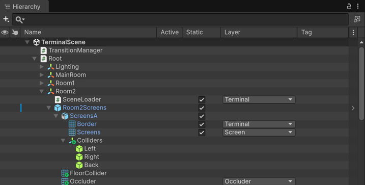

Configure how the Hierarchy window looks and behaves.
You can add columns to the Hierarchy window to display more information about GameObjects in your scene. For example, you can add columns that display the layerLayers in Unity can be used to selectively opt groups of GameObjects in or out of certain processes or calculations. This includes camera rendering, lighting, physics collisions, or custom calculations in your own code. More info
See in Glossary and tag
See in Glossary of each GameObject. The Unity Editor saves your column choices to the project and reloads them when you reopen the project. You can also display an alternating row background in the Hierarchy window for easier navigation of items.
To review Editor preferences that can affect the Hierarchy window, refer to the General tab of the Preferences window.
The Hierarchy window is extensible through scripting. To learn how to change the colors of rows and add your own labels, buttons, tooltips, and columns, refer to Extending the Hierarchy window. For the full API, refer to the HierarchyModule and HierarchyCoreModule Scripting Reference pages.

To add a column to the Hierarchy window, right-click a column header and select the column you want to add. You can also remove a column by deselecting it in the same menu. To create your own columns with a script, refer to Add a custom column to the Hierarchy window.
The following table lists the default columns available in the Hierarchy window.
| Column | Description |
|---|---|
| Visibility | Displays a column to control the scene visibility status of the GameObject. |
| Picking | Displays a column to control the scene pickability status of the GameObject. |
| Name | Displays a column to view and edit the name of the GameObject. Unlike other columns, you can’t add or remove this column. |
| Active | Displays a column to control the active status of the GameObject. |
| Static | Displays a column to control the static status of the GameObject. |
| Layer | Displays a column to view and control the layer assigned to the GameObject. Use the dropdown menu to assign a layer to the GameObject. |
| Tag | Displays a column to view and control the tags assigned to the GameObject. Use the dropdown menu to assign a tag to the GameObject. |
You can manage how columns display in the Hierarchy window using the following options:
The alternating row background is enabled by default in the Hierarchy window.
To disable the alternating row background, do one of the following:
To switch the Hierarchy window to the legacy Hierarchy window, go to Edit > Project Settings > Editor, and in the Hierarchy section, enable Use Legacy Hierarchy. When you change this setting, any open Hierarchy windows update immediately.